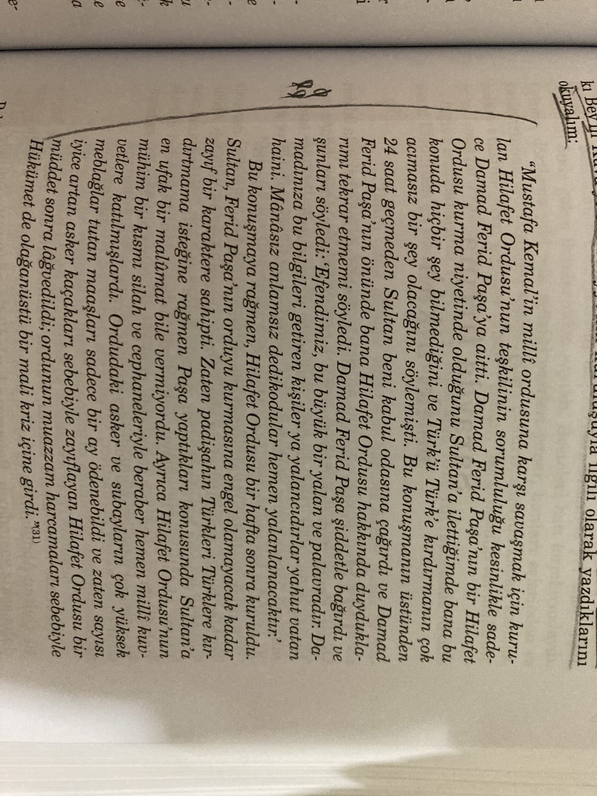
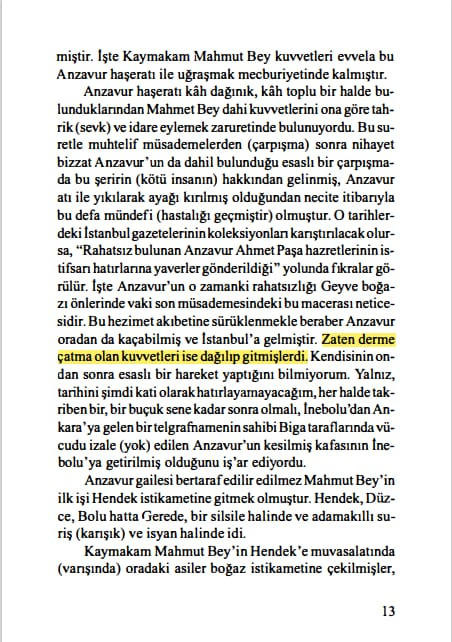

Kuvayı inzibatiyyenin sadece damat Ferit paÅŸanın maktullüğü olduÄŸu ve padiÅŸahın onun önüne geçememesi 📚 Şahbaba, s.179
İsmail Hakkı Okdayın rıza tevfiki kuvayı inzibatiyyenin kuvayı milliye ye karşı olacağı haberini alınca damat feriti uyarması 📚 Rıza tevfik, Birazda ben konuşayım, s.108
📚 Tarık Mümtaz Göztepe,Mütareke Gayyasında,s.268-269
2.belgesi
1.belgesi
📚 Hüsamettin Ertürk, İki Devrin Perde arkası, s.391-392
2.belge
📚Cemil Topuzlu,Seksen Yıllık Hatıralarım, s.203
Ahmed Avni paşanın Kuvay-i inzibatiye görüşü Ve Damat Ferid paşanın İfadeleri 📚Vahideddin’in Sırdaşı Avni Paşa Anlatıyor, s.234-235-236
2.belgesi
Murat bardakçının İnzibatiye Hakkındaki Beyanı 📚Şahbaba s.176
Yine Cemil topuzludan Ferit paşa Paris’e gitttikten sonra bir kurulun toplandığı ve bu kurul ve padişah tarafından inzibatiyyenin kapatılmasına karar verildiği lakin damat Ferit paşa geri geldiğinde yeniden kurması
📚Salahi Sonyel, İngiliz İstihbaratı, s.98
Bkz.Şahbaba, s.178-179
2.belgesi

📚 Ali Fuat Cebesoy, Milli Mücadele Hatıraları, s.409
📚 Ali Fuat Cebesoy, Milli Mücadele Hatıraları, s.412
İsmail Hakkı Okdayın Padişahın İnzibatiye Meselesine Dahil Olmadığı Hususundaki Düşünceleri 📚Yanya’dan Ankara’ya, s.249-251
2.belgesi
İsmail Hakkı Okdayın Padişahın İnzibatiye Meselesine Dahil Olmadığı Hususundaki Düşünceleri 📚Yanya’dan Ankara’ya, s.249-251
📌 *Anzavur ordusunun Kara Propagandası Ve Ordunun Firar edenleri.* 📚 Ali Fuat Cebesoy, Milli Mücadele Hatırları, s.350-351
📚 Tarık Mümtaz Göztepe, Mütareke Günleri, s.374-375
📌 *İnzibatiye ordusunun beceriksiz, ipsiz sapsız bir devşirme topluluğu olması.* 📚 Rıza Tevfik, Biraz da Ben Konuşayım, s.109
📚 Enver Behnan Şapolyo, Milli Mücadelenin İç Alemi, s.21
📚 Rahmi Apak, İstiklal Harbinde Garp Cephesi Nasıl Kuruldu, TTKY, s.129
📌 *Halbuki bu gözü dönmüş, azgın, fakat derme çatma Hilafet, ya da güya ÅŸeriatçı birliklerin paralarını bile İngilizler veriyorlardı!* 📚 Şevket Süreyya Aydemir, Tek Adam, C.2, s.308
📚 Celal Erikan, Kurtuluş Savaşı Tarihi, s.139
